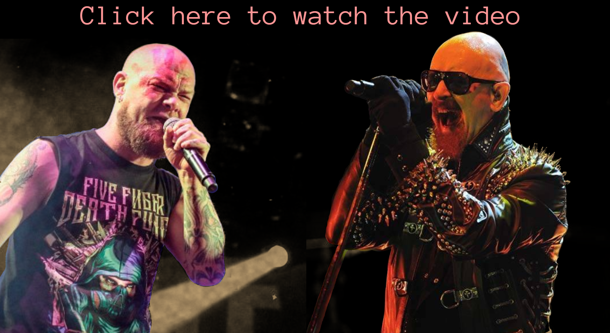

Judas Priest | Five Finger Death Punch
Home
Band members
Music
Judas Priest x Five Finger Death Punch
Judas Priest x Five Finger Death Punch

In 2013, Five Finger Death Punch collaborated together with Judas Priest's Vocalist, Rob Halford, and created the song Lift Me Up